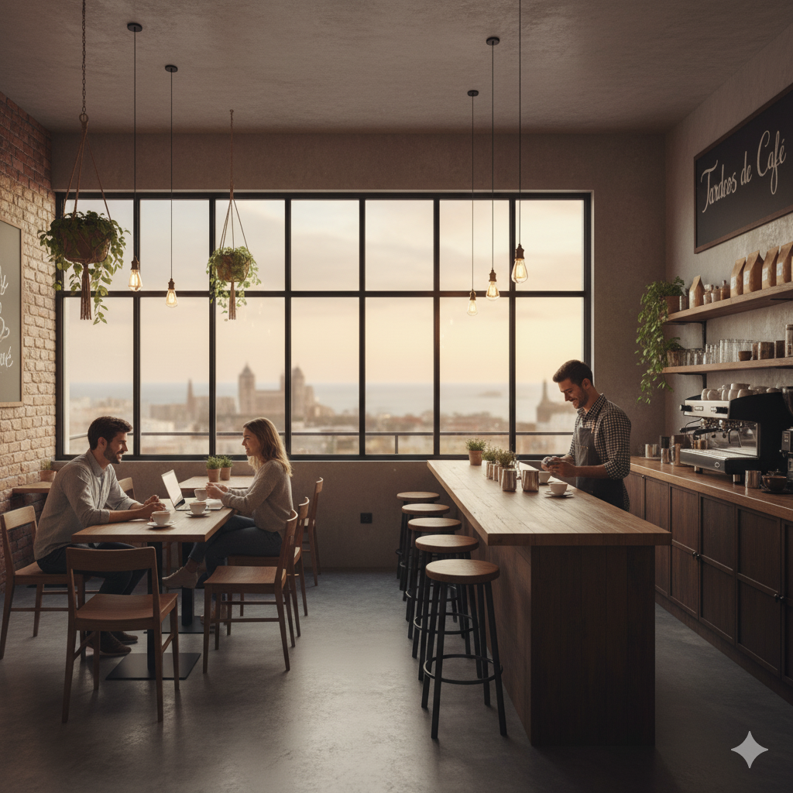
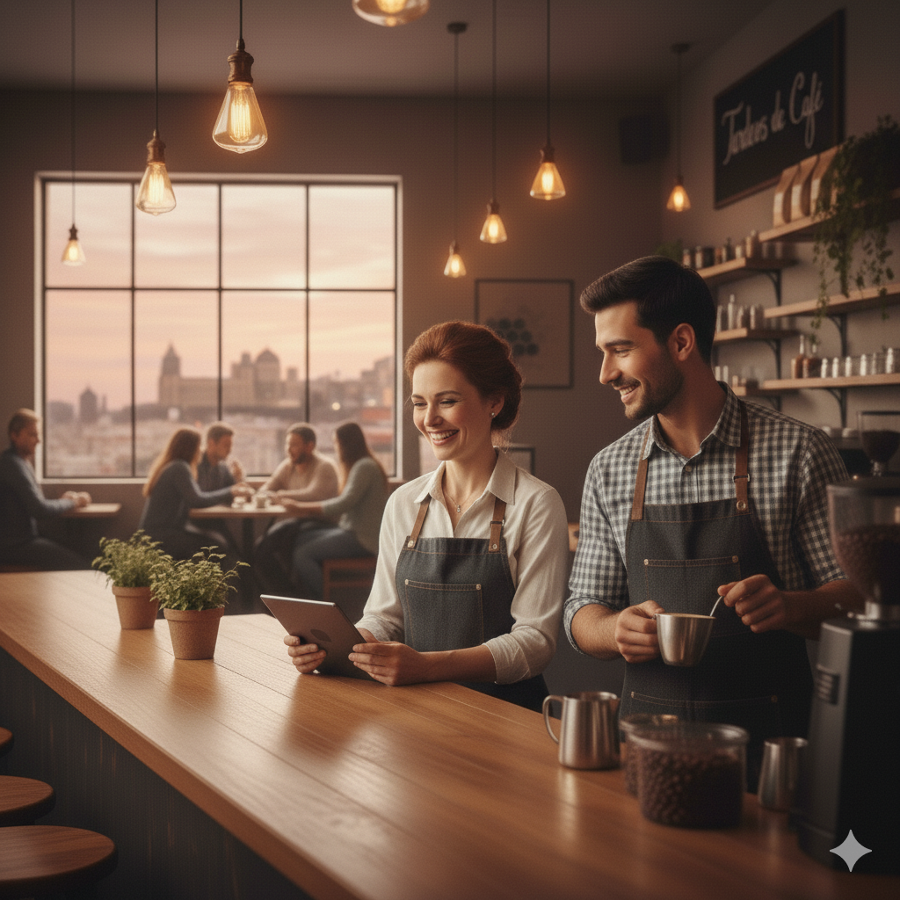
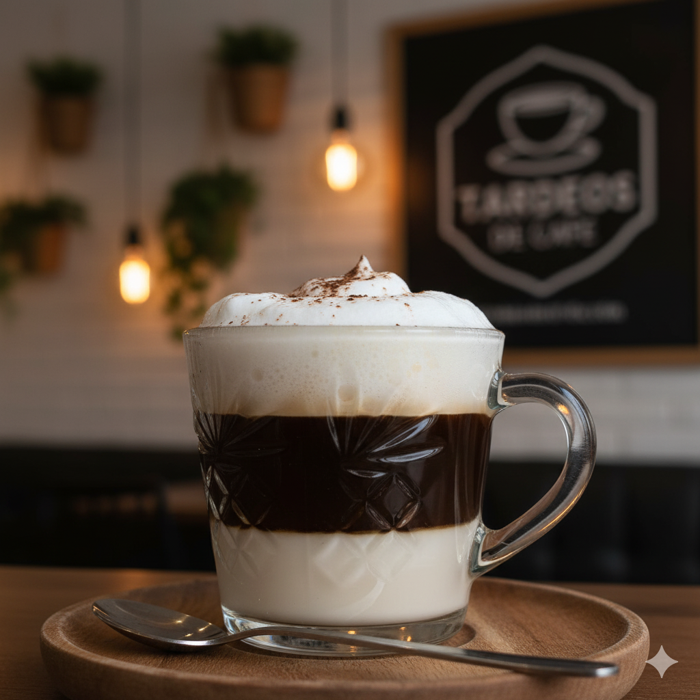
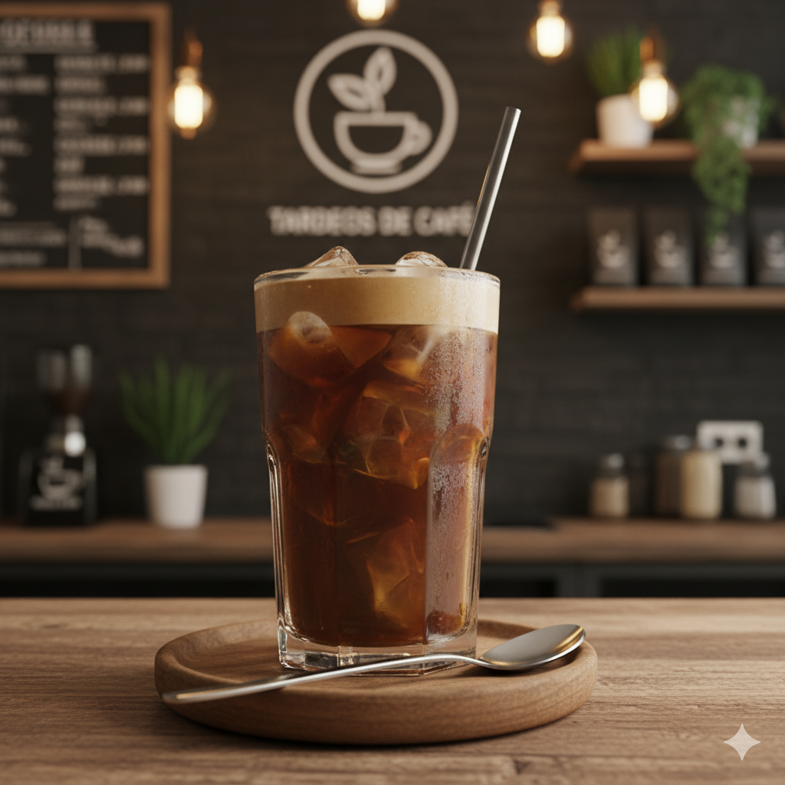
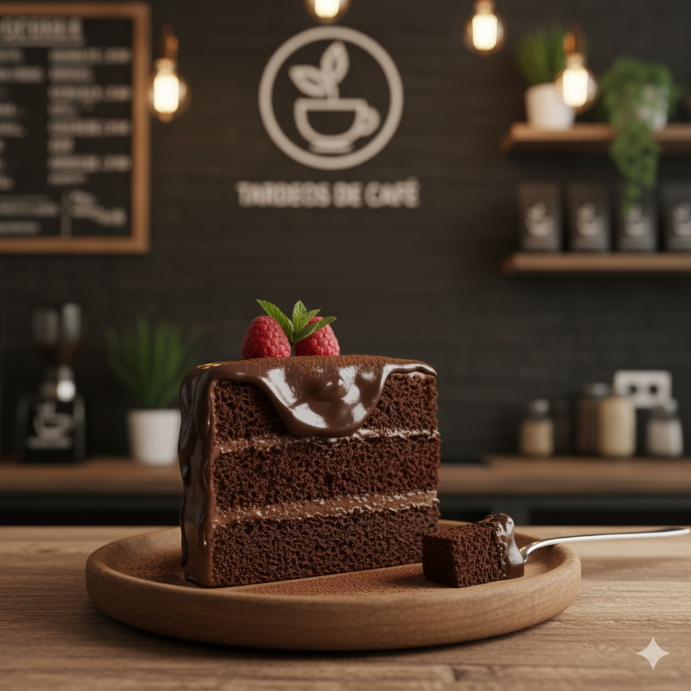

Nuestra Galería
Te invitamos a conocer el ambiente de Tardeos de Café a través de esta pequeña muestra. Desde nuestras vistas al mar hasta los cafés más especiales que servimos con cariño cada día.
El local



Nuestros cafés


Nuestros tés
Nuestras bebidas frias
Postres
